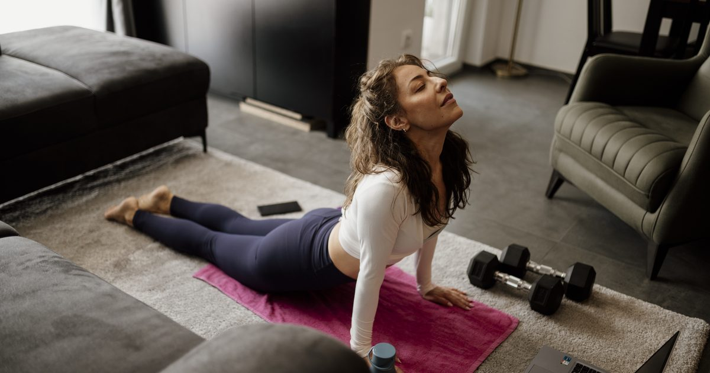

Minimal Gear
Suspension Trainers (TRX-Style): Worth It at Home?
A suspension trainer is a set of rings that solved the mounting problem. That single design decision is what you are paying for, and for most flats it is worth paying.

A suspension trainer is two adjustable straps with handles and a foot cradle, anchored above you. Functionally it is a set of gymnastic rings with an anchoring system designed for people without a beam.
That framing makes the buying decision straightforward: you are paying a premium over rings for the ability to hang it somewhere.
What you are actually buying
The door anchor. A soft strap that threads over the top of a closed door with a stopper on the far side. Requires no fixing, no drilling and no structural beam. This is the entire reason the product exists and it is worth real money in a flat or a rented home.
Foot cradles. Let you suspend your feet, which enables an entire category of exercise — suspended lunges, hamstring curls, pikes, and feet-elevated push-ups — that rings do less comfortably.
Single-point attachment. Both handles converge to one anchor, which is more forgiving of an imperfect anchor position than rings hung from two points.
What you are not buying is superior training capability. Rings do everything a suspension trainer does and more, at lower cost — see gymnastic rings at home.
Suspension trainer vs rings vs bands
| Suspension trainer | Rings | Bands | |
|---|---|---|---|
| Needs a structural anchor | No | Yes | No |
| Rows and pulling | Very good | Very good | Good |
| Dips and support holds | Limited | Excellent | No |
| Suspended leg work | Very good | Awkward | No |
| Overhead pressing | No | No | Yes |
| Assisted pull-ups | No | No | Yes |
| Cost | Highest | Low | Lowest |
| Storage | Small bag | Small bag |
Note the pattern: the three are complementary rather than competing. Bands do overhead pressing and pull-up assistance, which neither of the others can. A suspension trainer does suspended leg work, which bands cannot. Rings do dips and support holds properly.
Anchoring, and the door question
The door anchor works by threading the strap over the top of a closed door so a foam or fabric stopper sits against the far side. Your pulling force presses the stopper against the door rather than pulling the strap through.
Three rules that matter:
Anchor on the side the door opens away from you. If you pull in the direction the door opens, you are relying on the latch, and latches are not designed for this.
Lock the door if you can, or at minimum ensure nobody can open it from the other side. This is the most commonly reported suspension trainer accident.
Check the door is solid, not hollow-core. Many internal doors are hollow, and while the anchor rarely fails, a hollow door can deform around the stopper over time.
Other anchors work too — a pull-up bar, a beam, a tree branch — and are preferable where available.
What it trains well
Rows, at any difficulty. The strongest case. Walk your feet forward to make them harder, back to make them easier, and the adjustment is continuous rather than in steps. For the pattern that home training most struggles with, this is genuinely valuable — see rows at home.
Suspended hamstring curls. Heels in the cradles, hips lifted, curling the heels toward you. One of very few bodyweight options that loads the hamstrings' knee-flexion function — the same gap that sliders fill, per furniture sliders.
Suspended push-ups and pikes. The instability makes these substantially harder than floor equivalents at the same angle.
Assisted single-leg work. Holding the handles lets you work pistol squat progressions with precise assistance — see the pistol squat progression.
Chest flyes and single-arm work, which are otherwise awkward without cables.
What it trains poorly
Dips and support holds. The straps converge to one point, so there is little lateral stability. Ring dips are hard; suspension trainer dips are hard in a way that is mostly about not falling over.
Anything requiring load above bodyweight. Like all bodyweight tools, the ceiling is your own mass. Once you have outgrown suspended push-ups, you need added load — see weighted vest training.
Overhead pressing. Not possible. A band handles this and a suspension trainer does not.
Heavy leg work. Suspended lunges and squats are limited by balance rather than leg strength for most people.
A full-body session
Thirty minutes, twice a week.
- Suspended row — 3 × 10–15, feet forward to progress
- Suspended push-up — 3 × 8–15
- Suspended hamstring curl — 3 × 8–12
- Assisted split squat — 3 × 10–12 each leg
- Suspended pike — 3 × 8–12
- Chest flye — 2 × 10–12
Take the last set of each close to failure — with a bodyweight load, effort is the intensity variable and light loads taken close to failure produce comparable adaptation to heavy ones.1
The verdict
Worth it if: you have no structural anchor for rings, you want continuously adjustable rowing difficulty, and you value the suspended leg work. In a rented flat, that describes a lot of people.
Not worth it if: you have a beam or a wall-mounted bar, in which case rings do more for less. Or if you have not yet bought resistance bands, which cover overhead pressing and pull-up assistance that a suspension trainer cannot, at a fraction of the cost.
My order of purchase for most people remains bands first, then a pull-up bar if a frame allows, then a suspension trainer or rings depending on what you can anchor — set out in the minimalist home gym guide. A suspension trainer is a good third purchase and a poor first one.
And the usual caveat: adult activity guidance asks for muscle-strengthening work covering all major muscle groups,2 and none of it requires any of this. Buy equipment when a specific gap has become the limiting factor, not before.
Where to go next
For the more capable but harder-to-mount option, see gymnastic rings at home. For the cheapest solution to the same problem, see rows at home.
Frequently asked questions
Is a suspension trainer worth buying for home?
Worth it if you have no structural anchor for rings and value continuously adjustable rowing difficulty and suspended leg work. Not worth it if you have a beam or wall-mounted bar, since rings do more for less, or if you have not yet bought resistance bands.
Are suspension trainers safe on a door?
Generally yes, with three rules: anchor on the side the door opens away from you so you are not relying on the latch, lock the door or ensure nobody can open it, and check the door is solid rather than hollow-core.
What is the difference between a suspension trainer and gymnastic rings?
Functionally they are similar; the difference is anchoring. A suspension trainer includes a door anchor requiring no fixing or structural beam. Rings are cheaper and more capable but need somewhere solid to hang from.
What can you not do with a suspension trainer?
Overhead pressing, assisted pull-ups, dips with any real stability, and anything requiring load above your own bodyweight. Resistance bands cover the first two at a fraction of the cost.
Is a suspension trainer good for beginners?
The rows are excellent for beginners because difficulty adjusts continuously by walking your feet forward or back. The push-up and pike variations are harder than floor equivalents, so scale those carefully.
Sources and further reading
- Schoenfeld BJ, Grgic J, Ogborn D, Krieger JW. “Strength and Hypertrophy Adaptations Between Low- vs. High-Load Resistance Training: A Systematic Review and Meta-analysis.” Journal of Strength and Conditioning Research, 2017;31(12):3508–3523. PubMed.
- World Health Organization. WHO Guidelines on Physical Activity and Sedentary Behaviour. 2020.
- Schoenfeld BJ, Ogborn D, Krieger JW. “Dose-response relationship between weekly resistance training volume and increases in muscle mass: A systematic review and meta-analysis.” Journal of Sports Sciences, 2017;35(11):1073–1082. PubMed.
- NHS. Strength and Flex exercise plan.
Comments
Comments are not enabled yet. Add a hosted comment embed (Disqus, Commento, Giscus) inside this container when you are ready.